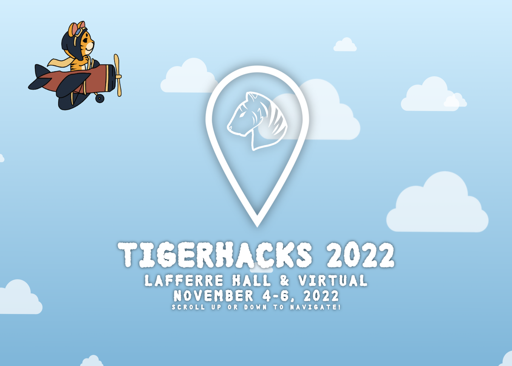
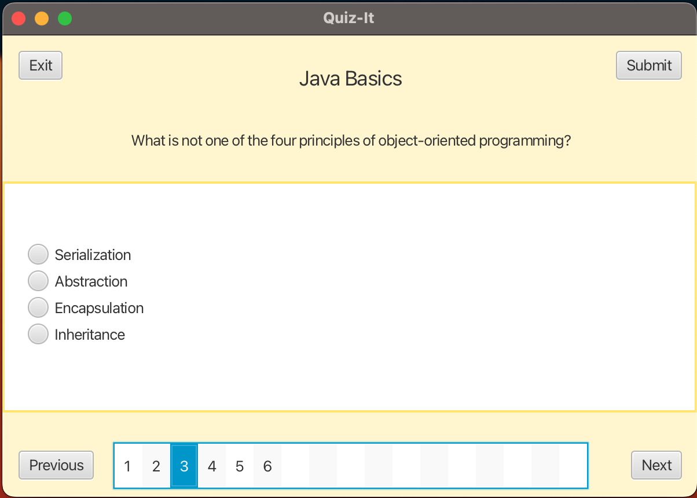
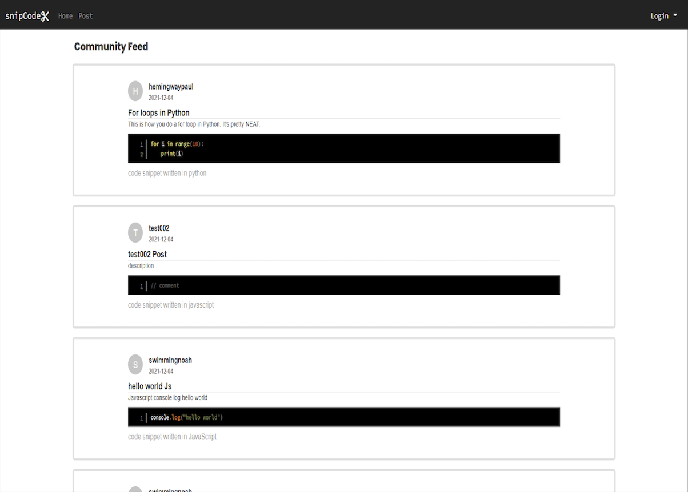

TigerHacks

The TigerHacks website is an interactive web application that presents information about Mizzou's Hackathon that occurs in November. As you scroll through the page, you traverse through information about the event in an airplane, train, and submarine. This web application was made using HTML, CSS, JavaScript, jQuery, and Firebase. The JavaScript code is used to detect scrolling, along with the scroll position, to react accordingly, such as shifting all elements to the left or right to simulate movement, or loading in elements at certain positions.
Quiz-It

Quiz-it is a desktop application that allows users to either take or create multiple-choice quizzes, depending on whether they have a teacher account or student account. With teacher accounts, users can create quizzes for their class by providing any number of questions, along with answer choices. They can also view the scores of all students that took quizzes they created. With student accounts, users can search for and take quizzes that are created by the teachers. They can view the scores of quizzes they took. This application stores its data via MySQL, which is hosted on an Amazon EC2 instance.
snipCode

snipCode is a web application that provides a community for programmers to share snippets of language-flexible, syntax-highlighted code. Users are allowed to specify which coding language they are posting a snippet of, and the application will syntax-highlight it accordingly. After a snippet is posted, other users can view it on the public feed. Technologies of this application include Angular, prism.js, Java, and MySQL. Angular is used for the UI, prism.js is used for syntax highlighting, Java is used to host the RESTful API, and MySQL stores all the data.